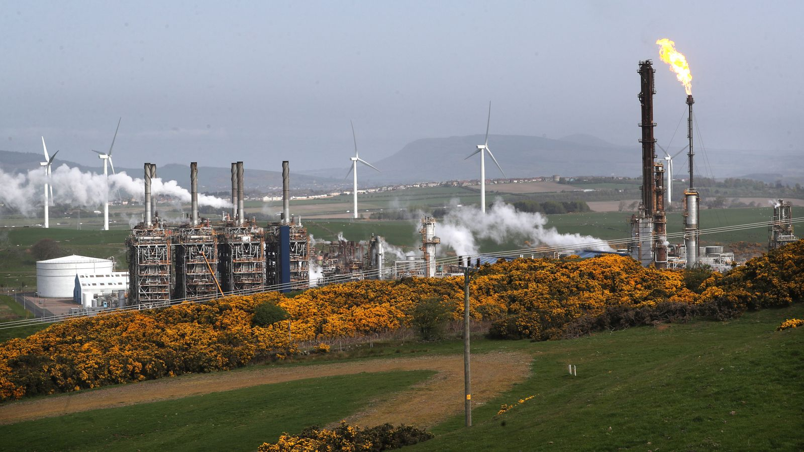

ExxonMobil to close Mossmorran plastics plant in Fife with hundreds of jobs at risk
Donald Trump has raised hopes several times that the US-Israel military strikes on Iran may soon be over. But as we enter the third week of the conflict and its effects rage across the wider energy-rich Middle East, financial markets are reflecting nerves over the growing impact on the global economy. Brent crude oil prices are now stuck firmly above $100 a barrel - up more than $30 in the month to date. Iran war latest: Trump threatens NATO Attacks by Iran on oil and gas and other infrastructure continue, despite US claims to have inflicted heavy damage on Tehran's missile and drone capabilities.
This chart tells you all you need to know. Any spike in global oil prices takes time to filter through fully. Black gold, as it is known, might be the enemy for the health of our planet, but it remains the crucial cog for the health of the global economy. Oil prices will only recover to pre-war levels when Middle East output and deliveries through the key Strait of Hormuz have resumed. The trouble here is that the biggest production sites for oil, and natural gas too, in the region have been shut down and it can take weeks to safely restart operations following any suspensions. It means that an end to the war is not necessarily a quick fix for oil prices, with deeper consequences ahead. More on those later.
The last kerosene shipments that passed through the Strait of Hormuz before its closure are due to arrive in Europe around 10 April, according to Benedict George, head of European products at Argus Media. "There's no realistic risk of actually running out" of jet fuel, George said, though he added that, "stocks could fall to a level where you have localised shortages". Ryanair group CEO Micheal O'Leary has warned of jet fuel supply disruption in May in an interview with Sky News. Speaking after a virtual meeting of EU countries' energy ministers to discuss their response, Energy Commissioner Dan Jorgensen suggested that measures brought in in 2022 after Russia's full-scale invasion of Ukraine could be revived.
This is where we have first seen the effects of rising oil prices. The old saying goes that UK fuel prices are quick to rise and slow to fall. Rewind to Monday 2 March - the first chance financial markets had to react to news of air strikes on Tehran the previous Saturday - and the Brent crude oil price rose by about $5 to almost $78 a barrel by the close. Sky News was told that UK wholesale costs had risen by 2p a litre that Monday night. For diesel, it was 7p. According to RAC data, average pump costs on 15 March saw diesel at its highest since 11 November 2023 at 160.6p - up 18p (13%) in the war to date. Petrol was at its highest since 29 August 2024 when it was 141.5p - up almost 9p (6.5%). The motoring group believes more increases are on the way as forecourts are restocked with more expensive fuel. The price picture is not helped by the fact that the pound has fallen in value versus the oil-priced dollar. The government and Competition and Markets Authority have warned the industry against profiteering - building on the regulator's consistent fuel market findings that drivers have been paying over the odds for years.
This is the lifeblood of the UK's rural communities and there is no price cap in place to shield users from price spikes. Inevitably, the cost of heating oil (kerosene) for new deliveries has risen as oil costs have gone up but they have doubled, prompting the government to intervene with £53m of financial aid for the poorest households. As with fuel prices, users are being urged to shop around if they need a delivery.